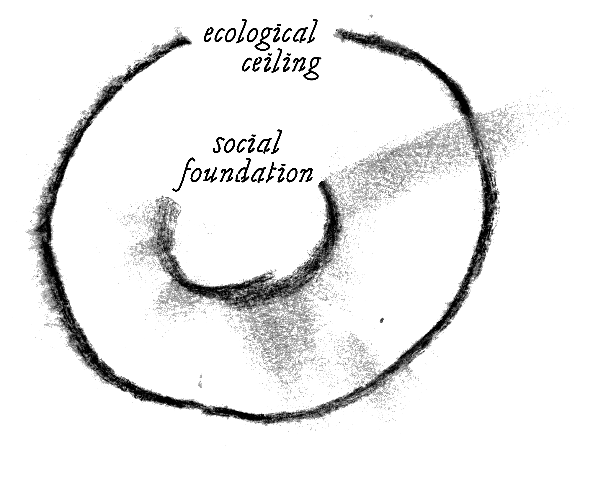

economy
kestävä kehitys
There has been a lot of talk about how Finnish forestry is sustainable, but also claims that it really isn’t. It’s a concept trying to fit together three dimensions of sustainability: social, environmental and economic. To get a better understanding one needs to define sustainability.
According to economist Kate Raworth, “sustainable development aims at human wellbeing within the carrying capacity of the Earth. This calls for the kind of economic development that takes account of both the limits of the Earth’s carrying capacity and the fundamentals of human progress and life.”
This means that ecological sustainability is the foundation of sustainable development. The same understanding is shared by the UN also in their 2030 Agenda for Sustainable Development. Securing ecosystems and sustainable use of natural resources are irreplaceable for sustainability.
Sustainable development in Finland is tracked following the 2030 Agenda and its Sustainable Development Goals (SDGs). According to Finland’s State of sustainable development report looking back at the progress achieved between 2016 and 2020 “Finland has almost reached the SDGs related to social and economic sustainability. Key challenges are related to consumption and production patterns, climate action and the state of biodiversity.”